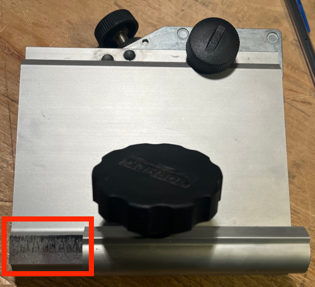
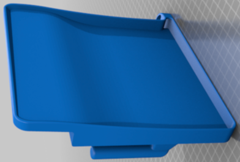
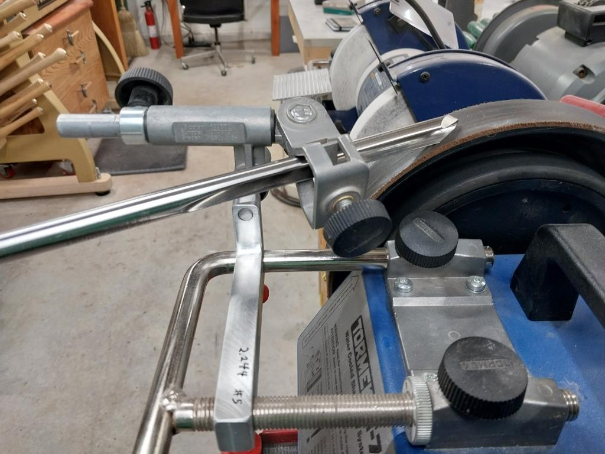

|
|

|
Jigs, Fixtures, & Modifications for the Tormek |
Some really great add-ons have emerged lately for the Tormek, and this section contains a quick reference to those user-designed jigs, fixtures, and modifications.
Index of Known Jigs, Fixtures, & Modifications
These modifications to the DBS-22 will be discussed referencing the parts breakdown shown to the right.
Do be sure that they are appropriate for your DBS-22 jig. Tormek periodically makes modifications to their jigs, so the change may not work for your DBS-22.
Rick Krung noted on the Tormek Forum that he removed part of the tube on part #1 (where this jig attaches to the Tormek Universal Support Bar). This is the part highlighted in a red rectangle in the picture to the left.
I made that same change, removing 40mm as shown in the picture above.
This change allows the jig to be aligned further towards the center of the Tormek, making the side-to-side movement of the parts easier and more steady.
I often use flat head screws which need to be counter-sunk by a bit which matches the screw head's angle. As noted in the picture to the left, 82° is a very common angle.
Such countersinks are available, but are quite expensive. Unfortunately, the DBS-22 will only sharpen bits down to 90*deg;.
I was able to modify my DBS-22 to make an 82° angle possible. The instructions for making such a modification are below.
The picture to the right shows the drill bit I sharpened to 82°, Other angles may be obtainable, but I've not tried them.
Click on any of the pictures below to see a bigger version.
Note, this is 4° away from 90° as it is half the total angle.
Notice how close the hole in the top of the picture is to the top edge of part #2.
This needs to be in the path for the swing lock screw (part #7). This is noted in the picture to the right.
On my jig, this hole needed to be 90mm from the left side, and 5mm from the top.
If the hole is too far from the top, part #7 will interfere with part #1 when the jig is in use.
Paul Tsigakis published a 3D printable design for a drip tray. As he noted on Thingiverse,
After spilling a lot of water everywhere, I made this is a drip tray made for the Tormek T8, so that the spilled water can be retuned to the tank.
Extra useful for those who use expensive water for the diamond wheels.
You can access the file for 3D printing at Thingiverse.com. The web link is :
https://www.thingiverse.com/thing:4791736.
Note: It takes a while to print. On my Ender 3V2, it took about 29 hrs.
Urban Ringström noted that there is an updated design of the Drip Tray for use with an FVB. The design of this tray is also useful if you are using the universal support bar from the horizontal position. Either way, you probably should also print this 2nd drip tray. I find the drip tray to be a very useful add-on, and encourage it's use.
The Front Vertical Base (FVB), designed by Dr. Vadim Kraichuk of KnifeGrinders, has been instrumental in making the sharpening process more repeatable. And KnifeGrinders has developed tools and software around it's use. Instructions for use are available from KnifeGrinders.
The FVB that KnifeGrinders designed is built to enable them to quickly sharpen knives in a very repeatable and accurate manner. And this system does that well. Of note though is that this system (as embedded in the associated app) is based on measuring from the FVB's top to the bottom of the universal support bar (USB) that the FVB is holding.
The video below shows the FVB in use.
DBS-22 Drill Bit Sharpener Modifications

DBS- 22 Parts Breakdown
Image courtesy Tormek

Modification to Part #1

40 mm Removed

Flat Head Screw

Sharpened Drill Bit with 82° Point Angle
Step 1: Align protractor with 90° on part #2.

Step 2: Add a mark where the 82° setting should be on part #2.

Step 3: Label the 82° setting.

Step 4: Drill a 7mm hole in part #2.

Drip Tray

Drip Tray
Front Vertical Base (FVB)
Note: The FVB has been replaced functionally by the Tormek MB-102 Multi-Base which offers this functionality, and more. And with the unfortunate passing of Dr. Kraichuk, they are not available for purchase.

Front Vertical Base
Block Style from KnifeGrinders
Update: with the very unfortunate and far too early passing of Dr. Kraichuk, these are no longer available from Knife Grinders. With my Colvin Tools company, I have made them available again.
This design incorporates the USB holding (as done by an XB-100) into the block. But, by making it a single block of aluminum, the costs are reduced.
Or you could take a different approach. The approach advocated by Ton Nillesen (also known as the "Dutchman") on the Tormek forum is to measure from the USB to the grindstone (rather than from the FVB to the USB). Taking this approach works for the sharpener, whether the sharpener chooses to use the FVB or not. And, it makes the size of the FVB matter not (except to ensure it does not interfere with its use).
Ton's documents can be accessed at Dutchman's Guide.
And, the on-line Calculators will work using this approach.
In either regard, the styles of FVBes that have been put forth are listed below. Other pictures of self-made FVBes are shown at KnifeGrinders.
|
I. Block style (as shown above to the right)
|
|
Front Vertical Base Linear Rail Style
|
|
Front Vertical Base Jet Whetstone Jig Style What is not known about this style is how the sharpener ensures the USB is properly aligned. This concern comes from the idea that each of the Jet jigs could be extended different amounts, causing the USB to not be aligned correctly to the Tormek's body. Quite possibly a block could be used to ensure they are extended to the same distance from the machine's body. |
| Goniostat |
This jig is mostly 3D printed. It requires an SVD-110 as the base on which it slides, and a WM-200 for setting the angle.
The files for making this jig are below:

Sharpening certain tools require angles to be cut in ways that can be complex. To do this precisely requires a Goniostat. The version I have made for use on a Tormek is shown here. It gets used for:
The original goniostat is shown below, and was outlined by Charles Holtzapffel in his 1850 book, Turning and Mechanical Manipulation, Vol. 3 - Abrasive and Other Processes not Accomplished with Cutting Tools. This was designed to work with a flat stone, though now these are used with flat spinning disks, and a newer variation of it is still available.

If you'd rather make a newer design of this one, drawings from Mike Fallows are below.
Page 1
Page 2
Page 3
Page 4
Page 5
I made this sled to ride on the SVD-110 Tool Rest. It makes sharpening those tools quite a bit easier.
| HanJig |
In December 2015, Jan Švancara posted on the Tormek forum an idea for modifying the Tormek TTS-100 Turning Tool Setter to accommodate the setup of the universal support bar (USB) based on the a few pre-determined knife edge angles. What is truly great about this idea is that it accommodates changes in the grindstone's diameter.
Sheang Han (who goes by Tournevis on the Tormek forum) built a jig for that made of metal. His information was posted on the Tormek forum around February 2016.
This jig is a great story for the sharpener. It shows the progression of ideas :
The generally-accepted opinion is that the sharpener should decide to use the HanJig if sharpening a few knives with a specific angle (e.g., one or two at a time at a farmer's market).
If sharpening quite a few knives with the same angle (i.e., all your wife's kitchen knives), then the platform approach will be faster overall.
Plans for the 4 HanJigs made by Rick Krung are linked below :
The bigger hole is for the Tormek's USB. It is 12 mm in diameter.
For the bearings, skate board ball bearings probably work acceptably, and are very cost effective (30 for about $12). You will need to drill the other two holes to accommodate a screw for a shaft for them.
These are prone to rusting if they get wet. For this reason, Rick used stainless steel ones. Each HanJig needs the following. If you are making 4, multiply everything by 4.

Jan later posted on the Tormek forum one that he had 3D printed. It is shown to the right.
| Honing Support Bar |
Brad Winesett posted pictures on the AAW Forum of a secondary bar he added to the USB which makes honing easier.
Brad noted that the vertical distance from the centerline of the auxiliary to the centerline of the USB is 1.27 inches.
After making one, I was reminded that it can only be used when sharpening from the horizontal position. When using the vertical, the honing wheel is rotating towards you and this can't be used.

|
 |

|
||||||||||||||||||||||||||||||||||||||||||||||||||||||||||||||||||||||||||||||||||||||||||||||||||||||||||||||||||||||||||||||||||||||||||||||||||||||||||||||||||||||||||||||||||||||||||||||||||||||||||||||||||||||||||||||||||||||||||||||||||||||||||||||||||||||||||||||||||||||||||||||||||||||||||||||||||||||||||||||||||||||||||||||||||||||||||||||||||||||||||||||||||||||||||||||||||||||||||||||||||||||||||||||||||||||||||||||||||||||||||||||||||||||||||||||||||||||||||||||||||||||||||||||||||||||||||||||||||||||||||||||||||||||||||||||||||||||||||||||||||||||||||||||||||||||||||||||||||||||||||||||||||||||||||||||||||||||||||||||||||||||||||||||||||||||||||||||||||||||||||||||||||||||||||||||||||||||||||||||||||||||||||||||||||||||||||||||||||||||||||||||||||||||||||||||||||||||||||||||||||||||||||||||||||||||||||||||||||||||||||||||||||||||||||||||||||||||||||||||||||||||||||||||||||||||||||||||||||||||||||||||||||||||||||||||||||||||||||||||||||||||||||||||||||||||||||||||||||||
| Click on any of these pictures to see a larger version | ||||||||||||||||||||||||||||||||||||||||||||||||||||||||||||||||||||||||||||||||||||||||||||||||||||||||||||||||||||||||||||||||||||||||||||||||||||||||||||||||||||||||||||||||||||||||||||||||||||||||||||||||||||||||||||||||||||||||||||||||||||||||||||||||||||||||||||||||||||||||||||||||||||||||||||||||||||||||||||||||||||||||||||||||||||||||||||||||||||||||||||||||||||||||||||||||||||||||||||||||||||||||||||||||||||||||||||||||||||||||||||||||||||||||||||||||||||||||||||||||||||||||||||||||||||||||||||||||||||||||||||||||||||||||||||||||||||||||||||||||||||||||||||||||||||||||||||||||||||||||||||||||||||||||||||||||||||||||||||||||||||||||||||||||||||||||||||||||||||||||||||||||||||||||||||||||||||||||||||||||||||||||||||||||||||||||||||||||||||||||||||||||||||||||||||||||||||||||||||||||||||||||||||||||||||||||||||||||||||||||||||||||||||||||||||||||||||||||||||||||||||||||||||||||||||||||||||||||||||||||||||||||||||||||||||||||||||||||||||||||||||||||||||||||||||||||||||||||||||||
| KenJig |
The KenJig (PDF instructions) was one of the first add-on jigs made for the Tormek, and one of the easiest to make, and easiest to use.
It is based on the Dutchman's guide for Grinding Angle Adjustment for the Tormek, and named after the Tormek forum's fearless leader, Ken Schroeder.
| Knife Angle Setter |
Per Ericson (Perra on the Tormek forum) posted a nicely manufactured device for easily setting the angle for sharpening knives. He graciously posted the instructions, and I am putting a link to them here.
This jig is really great as it allows for identifying the specific angle to be ground when using of the Tormek KJ-45 Centering Jig. This is significantly simpler than using the WM-200 AngleMaster.
Steps for using this jig:
| Laser Goniometer |

Jan Švancara's document on building a Laser Goniometer outlines a great way to measure bevel angles with a simple laser device.
This device makes those measurements very precise. And his use of kids toys (Erector Set) to make it lends to a bit of fun.
| Pivot Jigs for Tormek SVM Knife Jigs |
Collar Pivot Jig
The first version of this collar is shown on the right, and was published in 2018 on the Tormek forum by CB. It makes for easier sharpening of knives as it allows for easier pivoting of the knife jig when sharpening. It is especially useful for keeping a consistent grind on the edge, especially for blades with curves (as most have).
This enhancement is made from four 12mm collars (like 57485K69 from McMaster-Carr).
The two that seem joined are held together by an M6-1.0 set screw (like 91390A126 from McMaster-Carr), and that is a pivot point.
I use this jig for sharpening pruning shears, and it works well to allow for pivoting the knife jig along the blade's curved edge.

Later in 2018, Rick Krung published on the Tormek forum an improvement to CB's design. This is shown in the 2nd picture on the right.
It is really quite nice, and has received (well-deserved) rave reviews, though it is a bit more involved to make as it requires a bit of machining and welding. I do like the simplicity of this approach, and the excellent work done by a great machinist.
The video below is from Knife Grinders showing the Mounting the Pin Pivot Collar on your Knife Jig.

|
|
| Pin Pivot Collar with the SVM-45 Knife Jig | |
Still later in 2018, Gord Cameron published on the Tormek forum a different approach which had simplicity in fabrication as its governing principle. This is shown in the pictures on the right.
Gord is not a machinist, and stated that he wanted something that could be made by anyone with a hack saw, a file, and a drill press. He also wanted to design something that someone could make out of plastic, either by shaping it or by using a 3D printer, so he designed it to have more reinforcing bulk than the pin pivot collar. (Editor's note: I've not been successful making one of these from plastic as even Delrin was too flexible.)
The one shown is made from a bar of aluminium that is 2" long and 1" square.
The picture at the bottom shows this attached to the knife jig.


Martin Vinje-Dahl (Leapstep) put a 3D-printable model for printing a wedge pivot jig on Printables.com. You can access it at:
https://www.printables.com/model/188651-tormek-pivot-collar-12mm.
| Platform for Sharpening and Honing |

Enhanced Platform for Sharpening Knives
Jan Švancara developed this simple jig for easier and more consistent honing and sharpening (first picture on the right), and the even more enhanced jig (2d picture on the right). The 2d picture also shows the laser he uses for alignment. (I love how Jan used Erector Set toys to build jigs.)
Tony Whitfield (AKA, "Y-Not") posted an additional recommendation regarding the knife sharpening platform, in that he recommended putting a drop of mineral oil on the knife blade and the platform. This was posted in 2018 on the Tormek Forum as a way to reduce scratches on the edge of the blade.
Herman Trivilino's video below shows the use of a platform jig. His looks a little different, as he has affixed a piece of steel to the Tormek SVX-150 Scissors Jig (my variation of this is a piece of very hard plastic attached to the Tormek SVD-110 Tool Rest). In any case, the results are the same.
| Projection Jig for the TTS-100 |


I made these pieces using my 3D printer to make it easy for quick-and-dirty resharpening of my chisels when using the SE-77 jig. The idea is that the distance from the USB to the grindstone is set using the B hole in the TTS-100, and the tool projection is set using this jig.
Settings for projection when using the SVD-186 are also available so that this can be used for both jigs.
The jig I made is two pieces as that is easier to 3-D print.
| Part | STL file |
|---|---|
| Part 1 - Top Plate | TTS-100 ProjJig - Part 1.stl |
| Part 2 - Bottom Hook | TTS-100 ProjJig - Part 2.stl |
Special thanks are due to Jan H (jvh on the Tormek Forum, and developer of TormekCalc2) for calculating the projections necessary for the SE-77 using parametric CAD.
| Rotary Knife Jig |


I made this set of add-on parts for the Tormek SVD-185 / SVD-186 Jig so I could sharpen rotary knives for my wife.
The pieces added are
The videos below show the modified jig in use. The first video is using the Tormek SG-250 wheel to sharpen the blade, and the second video is using the Tormek SJ-250 wheel to hone it.
| Software to Set Grinding Angles |
Dr. Vadim Kraichuk at KnifeGrinders developed an application for Windows, Mac, and Android software to set grinding angles on Tormek T-4, T-7, T-8 and SuperGrind 2000 standard position (grinding into the wheel), other similar brands (Scheppach, Jet, Record etc), using jigs.
The video below is from Knife Grinders showing the Grinding Software in use.
| Stone Nut Spacer |
Ringarn67 on the Tormek forum posted a link to a 3D-printable piece which can be used as a spacer when the grindstone is removed. The design can be found on Printables.com at Tormek Spacer with Threads.
| Universal Support Bar (USB) Spacer for the DBS-22 Drill Bit Sharpening Attachment |
Micha Schmid posted this on the Tormek forum in 2021. He noted how it makes it easer and faster to set the USB relative to the grindstone, and it also helps ensure the stone is consistently flat relative to the Universal Support Bar.
It is made from aluminium. The dimensional information are:
Keld Petersen milled a flat surface on the USB spacer, making it easier to remove. If it is difficult to remove the spacer after the height of the USB is set, you can turn the grinding stone by hand and the spacer will loosen. The lower picture on the right shows the spacer with the milled flat.